Using custom priors, likelihood, or movements in outbreaker2
Thibaut Jombart
2017-02-22
In this vignette, we show how custom functions for priors, likelihood, or movement of parameters and augmented data can be used in outbreaker2. In all these functions, the process will be similar:
- write your own function with the right arguments
- pass this function as an argument to a
custom...function - pass the result to outbreaker2
Note that 2-3 can be a single step if passing the function to the arguments of outbreaker2 directly. Also note that all priors and likelihoods are expected on a log scale. Finally, also note that while the various custom... functions will try to some extent to check that the provided functions are valid, such tests are very difficult to implement. In short: you are using these custom features at your own risks - make sure these functions work before passing them to outbreaker2.
Customising priors
Priors of outbreaker2 must be a function of an outbreaker_param list (see ?outbreaker_param). Here, we decide to use a step function rather than the default Beta function as a prior for pi, the reporting probability, and a flat prior between 0 and 1 for the mutation rate (which is technically a probability in the basic genetic model used in outbreaker2).
We start by defining two functions: an auxiliary function f which returns values on the natural scale, and which we can use for plotting the prior distribution, and then a function f_pi which will be used for the customisation.
f <- function(pi) {
ifelse(pi < 0.8, 0, 5)
}
f_pi <- function(param) {
log(f(param$pi))
}
plot(f, type = "s", col = "blue",
xlab = expression(pi), ylab = expression(p(pi)),
main = expression(paste("New prior for ", pi)))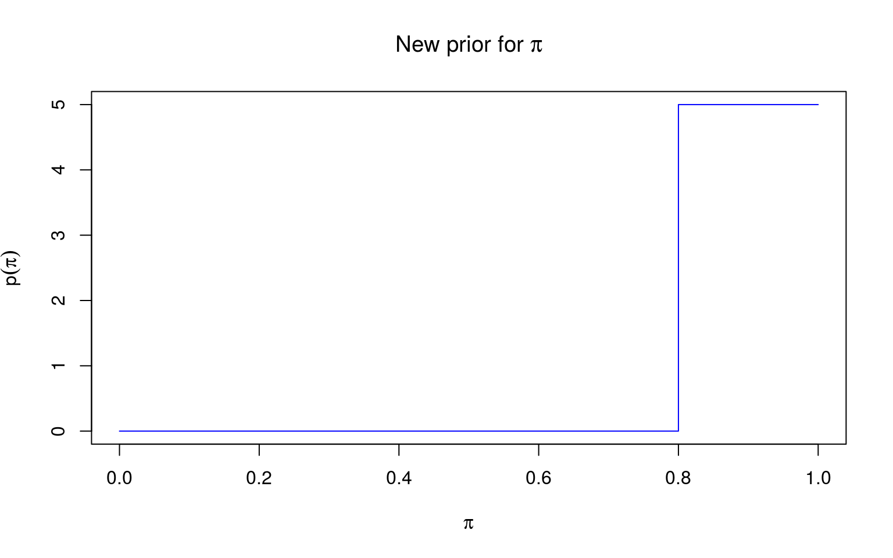
While f is a useful function to visualise the prior, f_pi is the function which will be passed to outbreaker. To do so, we pass it to custom_priors:
library(outbreaker2)
f_mu <- function(param) {
if (param$mu < 0 || param$mu > 1) {
return(-Inf)
} else {
return(0.0)
}
}
priors <- custom_priors(pi = f_pi, mu = f_mu)
priors
#>
#>
#> ///// outbreaker custom priors ///
#>
#> class: custom_priors list
#> number of items: 4
#>
#> /// custom priors set to NULL (default used) //
#> $eps
#> NULL
#>
#> $lambda
#> NULL
#>
#> /// custom priors //
#> $mu
#> function (param)
#> {
#> if (param$mu < 0 || param$mu > 1) {
#> return(-Inf)
#> }
#> else {
#> return(0)
#> }
#> }
#> <environment: 0x3129350>
#>
#> $pi
#> function (param)
#> {
#> log(f(param$pi))
#> }
#> <environment: 0x3129350>Note that custom_priors does more than just adding the custom function to a list. For instance, the following customisations are all wrong, and rightfully rejected:
## wrong: not a function
## should be pi = function(x){0.0}
custom_priors(pi = 0.0)
#> Error in custom_priors(pi = 0): The following priors are not functions: pi
## wrong: two arguments
custom_priors(pi = function(x, y){0.0})
#> Error in custom_priors(pi = function(x, y) {: The following priors dont' have a single argument: piWe can now use the new priors to run outbreaker on the fake_outbreak data (see introduction vignette):
dna <- fake_outbreak$dna
dates <- fake_outbreak$sample
w <- fake_outbreak$w
data <- outbreaker_data(dna = dna, dates = dates, w_dens = w)
## we set the seed to ensure results won't change
set.seed(1)
res <- outbreaker(data = data, priors = priors)We can check the results first by looking at the traces, and then by plotting the posterior distributions of pi and mu, respectively:
plot(res)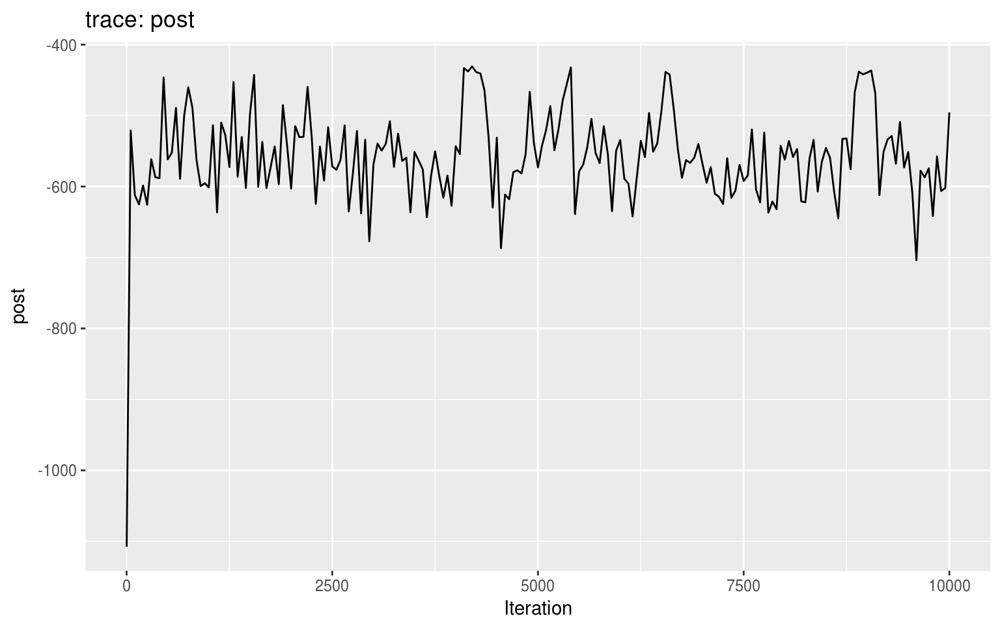
plot(res, "pi", burnin = 500)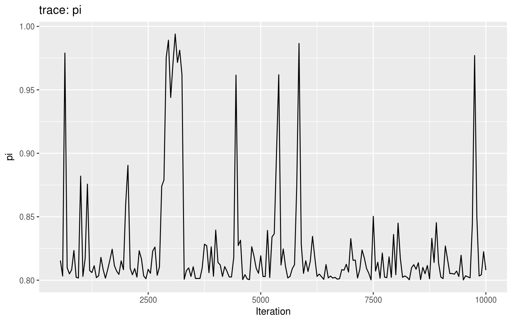
plot(res, "mu", burnin = 500)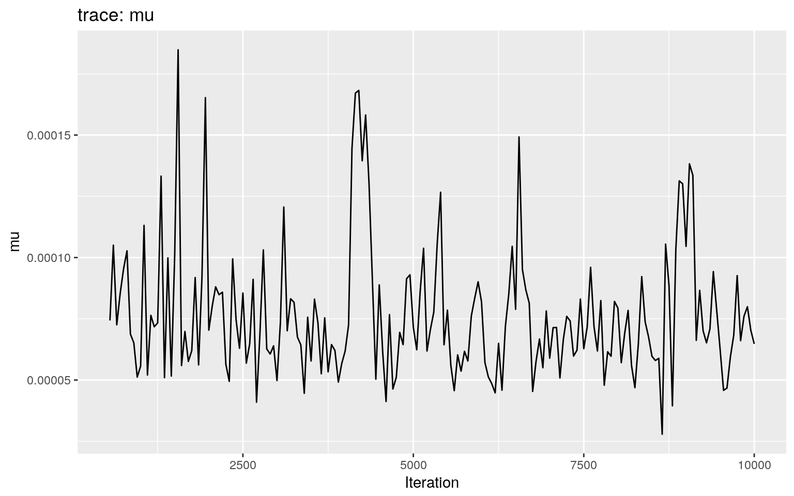
plot(res, "pi", type = "density", burnin = 500)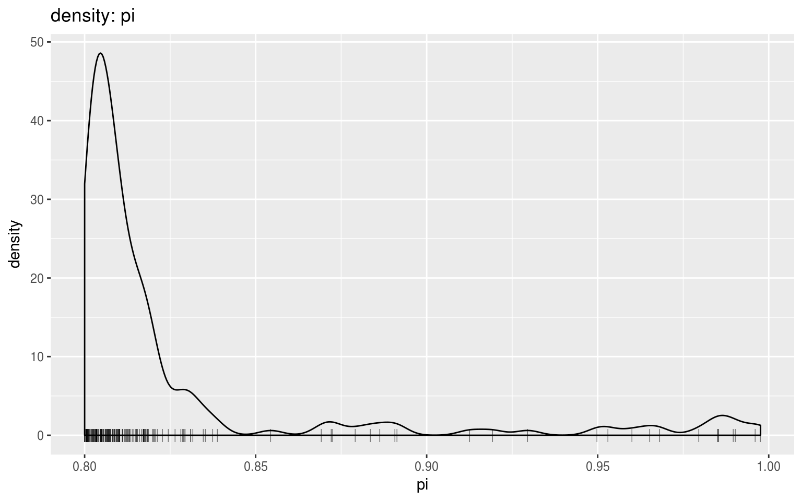
plot(res, "mu", type = "hist", burnin = 500)
#> `stat_bin()` using `bins = 30`. Pick better value with `binwidth`.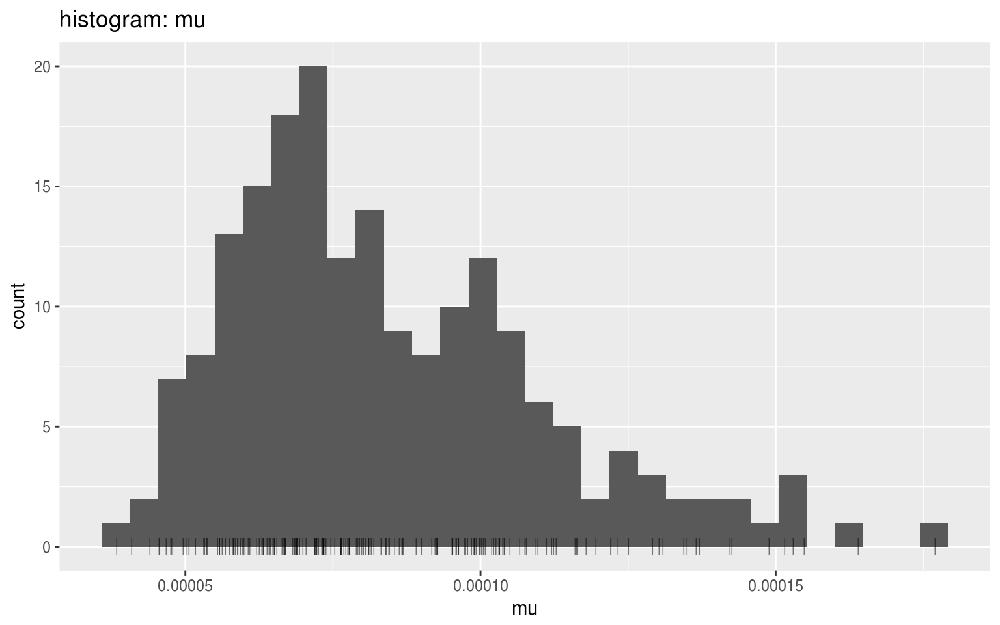
Note that we are using density and histograms here for illustrative purposes, but there is no reason to prefer one or the other for a specific parameter.
Interestingly, the trace of pi suggests that the MCMC oscillates between two different states, on either bound of the interval on which the prior is positive (it is -Inf outside (0.8; 1)). This may be a consequence of the step function, which causes sharp ‘cliffs’ in the posterior landscape. What shall one do to derive good samples from the posterior distribution in this kind of situation? There are several options, which in fact apply to typical cases of multi-modal posterior distributions:
Avoid ‘cliffs’, i.e. sharp drops in the posterior landscape, typically created by using step-functions in likelihoods and in priors.
Use larger samples, i.e. run more MCMC iterations.
Use a different sampler, better than Metropolis-Hasting at deriving samples from multi-modal distributions.
Because we know what the real transmission tree is for this dataset, we can assess how the new priors impacted the inference of the transmission tree.
summary(res, burnin = 500)
#> $step
#> first last interval n_steps
#> 550 10000 50 190
#>
#> $post
#> Min. 1st Qu. Median Mean 3rd Qu. Max.
#> -703.9 -592.0 -558.9 -554.5 -527.8 -430.7
#>
#> $like
#> Min. 1st Qu. Median Mean 3rd Qu. Max.
#> -705.5 -593.7 -560.5 -556.2 -529.4 -432.3
#>
#> $prior
#> Min. 1st Qu. Median Mean 3rd Qu. Max.
#> 1.609 1.609 1.609 1.609 1.609 1.609
#>
#> $mu
#> Min. 1st Qu. Median Mean 3rd Qu. Max.
#> 2.788e-05 5.948e-05 7.069e-05 7.661e-05 8.602e-05 1.848e-04
#>
#> $pi
#> Min. 1st Qu. Median Mean 3rd Qu. Max.
#> 0.8000 0.8036 0.8087 0.8262 0.8185 0.9976
#>
#> $tree
#> from to time support generations
#> 1 NA 1 -1.0 NA NA
#> 2 1 2 1.0 1.0000000 1.0
#> 3 2 3 3.0 0.9947368 1.0
#> 4 NA 4 2.0 NA NA
#> 5 3 5 4.0 0.9842105 1.0
#> 6 4 6 5.0 0.9736842 1.0
#> 7 4 7 5.0 1.0000000 1.0
#> 8 5 8 6.0 0.9631579 1.0
#> 9 6 9 6.0 1.0000000 1.0
#> 10 6 10 7.0 1.0000000 1.0
#> 11 7 11 7.0 0.5105263 1.0
#> 12 5 12 7.0 0.8315789 1.0
#> 13 9 13 7.0 1.0000000 1.0
#> 14 5 14 7.0 0.8000000 1.0
#> 15 5 15 7.5 0.7789474 1.0
#> 16 4 16 8.0 0.5052632 2.0
#> 17 4 17 7.0 0.6684211 1.5
#> 18 5 18 9.0 0.4526316 2.0
#> 19 9 19 9.0 1.0000000 2.0
#> 20 10 20 10.0 0.9947368 2.0
#> 21 11 21 10.0 0.9789474 2.0
#> 22 11 22 11.0 0.9842105 2.0
#> 23 13 23 9.0 1.0000000 2.0
#> 24 13 24 10.0 1.0000000 3.0
#> 25 13 25 9.0 1.0000000 2.0
#> 26 17 26 10.0 0.9894737 3.0
#> 27 17 27 11.0 1.0000000 3.0
#> 28 NA 28 9.0 NA NA
#> 29 10 29 11.0 1.0000000 2.0
#> 30 13 30 11.0 0.9842105 3.0
tree <- summary(res, burnin = 500)$tree
comparison <- data.frame(case = 1:30,
inferred = paste(tree$from),
true = paste(fake_outbreak$ances),
stringsAsFactors = FALSE)
comparison$correct <- comparison$inferred == comparison$true
comparison
#> case inferred true correct
#> 1 1 NA NA TRUE
#> 2 2 1 1 TRUE
#> 3 3 2 2 TRUE
#> 4 4 NA NA TRUE
#> 5 5 3 3 TRUE
#> 6 6 4 4 TRUE
#> 7 7 4 4 TRUE
#> 8 8 5 5 TRUE
#> 9 9 6 6 TRUE
#> 10 10 6 6 TRUE
#> 11 11 7 7 TRUE
#> 12 12 5 8 FALSE
#> 13 13 9 9 TRUE
#> 14 14 5 5 TRUE
#> 15 15 5 5 TRUE
#> 16 16 4 7 FALSE
#> 17 17 4 7 FALSE
#> 18 18 5 8 FALSE
#> 19 19 9 9 TRUE
#> 20 20 10 10 TRUE
#> 21 21 11 11 TRUE
#> 22 22 11 11 TRUE
#> 23 23 13 13 TRUE
#> 24 24 13 13 TRUE
#> 25 25 13 13 TRUE
#> 26 26 17 17 TRUE
#> 27 27 17 17 TRUE
#> 28 28 NA NA TRUE
#> 29 29 10 10 TRUE
#> 30 30 13 13 TRUE
mean(comparison$correct)
#> [1] 0.8666667Customizing likelihood
Likelihood functions customisation works identically to prior functions. The only difference is that custom functions will take two arguments (data and param) instead of one in the prior functions. The function used to specify custom likelihood is custom_likelihoods. Each custom function will correspond to a specific likelihood component:
custom_likelihoods()
#>
#>
#> ///// outbreaker custom likelihoods ///
#>
#> class: custom_likelihoods list
#> number of items: 5
#>
#> /// custom likelihoods set to NULL (default used) //
#> $genetic
#> NULL
#>
#> $reporting
#> NULL
#>
#> $timing_infections
#> NULL
#>
#> $timing_sampling
#> NULL
#>
#> $contact
#> NULLsee ?custom_likelihoods for details of these components, and see the section ‘Extending the model’ for new, other components. As for custom_priors, a few checks are performed by custom_likelihoods:
## wrong: not a function
custom_likelihoods(genetic = "fubar")
#> Error in custom_likelihoods(genetic = "fubar"): The following likelihoods are not functions: genetic
## wrong: only one argument
custom_likelihoods(genetic = function(x){ 0.0 })
#> Error in custom_likelihoods(genetic = function(x) {: The following likelihoods dont' have two arguments: geneticA trivial customisation is to disable some or all of the likelihood components of the model by returning a finite constant. Here, we apply this to two cases: first, we will disable all likelihood components as a sanity check, making sure that the transmission tree landscape is explored freely by the MCMC. Second, we will recreate the Wallinga & Teunis (1994) model, by disabling specific components.
A null model
f_null <- function(data, param) {
return(0.0)
}
null_model <- custom_likelihoods(genetic = f_null,
timing_sampling = f_null,
timing_infections = f_null,
reporting = f_null,
contact = f_null)
null_model
#>
#>
#> ///// outbreaker custom likelihoods ///
#>
#> class: custom_likelihoods list
#> number of items: 5
#>
#> /// custom likelihoods //
#> $genetic
#> function (data, param)
#> {
#> return(0)
#> }
#> <environment: 0x3129350>
#>
#> $reporting
#> function (data, param)
#> {
#> return(0)
#> }
#> <environment: 0x3129350>
#>
#> $timing_infections
#> function (data, param)
#> {
#> return(0)
#> }
#> <environment: 0x3129350>
#>
#> $timing_sampling
#> function (data, param)
#> {
#> return(0)
#> }
#> <environment: 0x3129350>
#>
#> $contact
#> function (data, param)
#> {
#> return(0)
#> }
#> <environment: 0x3129350>We also specify settings via the config argument to avoid detecting imported cases, reduce the number of iterations and sampling each of them:
null_config <- list(find_import = FALSE,
n_iter = 500,
sample_every = 1)
set.seed(1)
res_null <- outbreaker(data = data,
config = null_config,
likelihoods = null_model)
plot(res_null)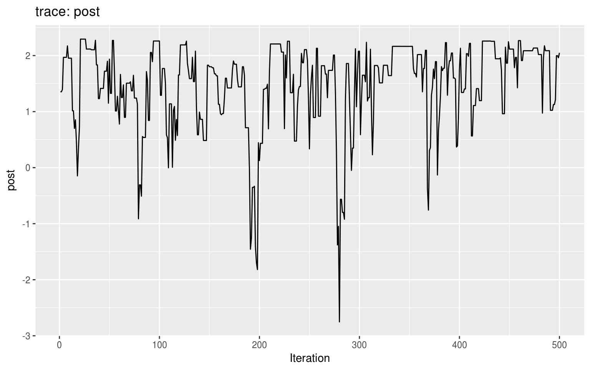
plot(res_null, "pi")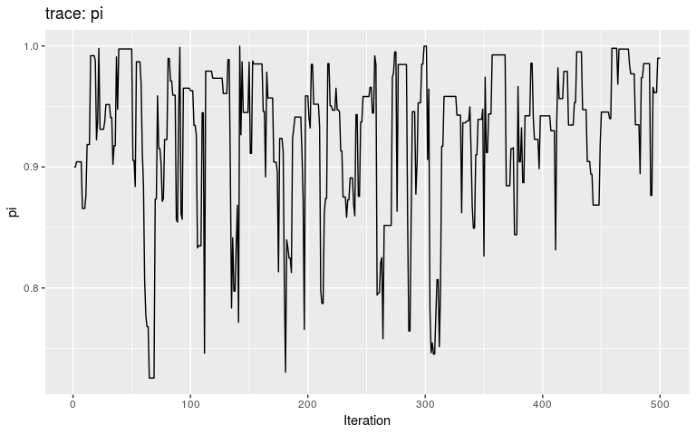
plot(res_null, "mu")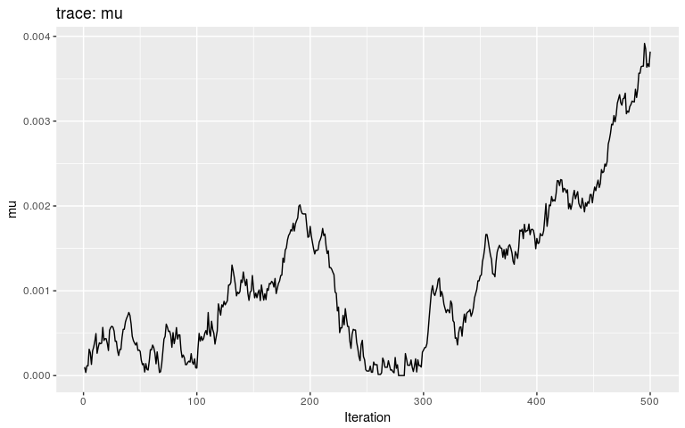
By typical MCMC standards, these traces look appaling, as they haven’t reach stationarity (i.e. same mean and variance over time), and are grossly autocorrelated in parts. Fair enough, as these are only the first 500 iterations of the MCMC, so that autocorrelation is expected. In fact, what we observe here literally is the random walk across the posterior landscape, which in this case is only impacted by the priors.
We can check that transmission trees are indeed freely explored:
plot(res_null, type = "alpha")
#> Warning: Removed 500 rows containing missing values (geom_point).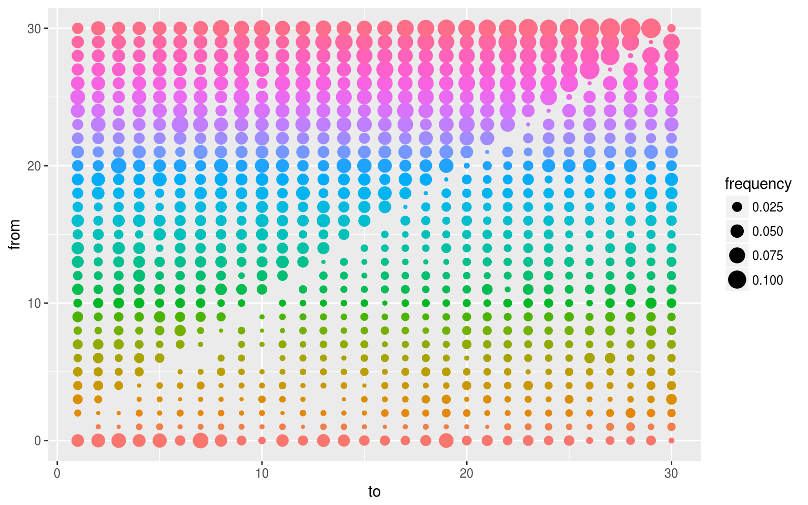
Do not try to render the corresponding network using plot(..., type = "network") as the force-direction algorithm will go insane. However, this network can be visualised using igraph, extracting the edges and nodes from the plot (without displaying it):
## extract nodes and edges from the visNetwork object
temp <- plot(res_null, type = "network", min_support = 0)
class(temp)
#> [1] "visNetwork" "htmlwidget"
head(temp$x$edges)
#> from to value arrows color
#> 1 1 2 0.022 to #CCDDFF
#> 2 1 3 0.012 to #CCDDFF
#> 3 1 4 0.018 to #CCDDFF
#> 4 1 5 0.014 to #CCDDFF
#> 5 1 6 0.002 to #CCDDFF
#> 6 1 7 0.018 to #CCDDFF
head(temp$x$nodes)
#> id label value color shape shaped
#> 1 1 1 0.398 #CCDDFF dot star
#> 2 2 2 0.248 #B2D9E3 dot <NA>
#> 3 3 3 0.234 #98D6C7 dot <NA>
#> 4 4 4 0.282 #7ED2AC dot <NA>
#> 5 5 5 0.418 #99CAA9 dot <NA>
#> 6 6 6 0.386 #C2C0AD dot <NA>
## make an igraph object
library(igraph)
#>
#> Attaching package: 'igraph'
#> The following objects are masked from 'package:stats':
#>
#> decompose, spectrum
#> The following object is masked from 'package:base':
#>
#> union
net_null <- graph.data.frame(temp$x$edges,
vertices = temp$x$nodes[1:4])
plot(net_null, layout = layout.circle,
main = "Null model, posterior trees")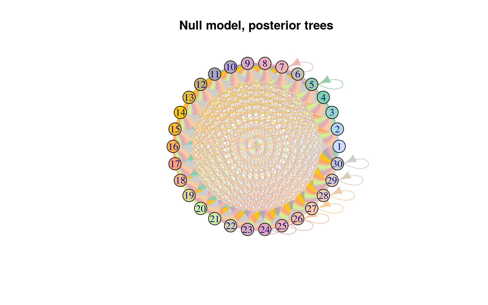
We can derive similar diagnostics for the number of generations betweens cases (kappa), only constrained by default settings to be between 1 and 5, and for the infection dates (t_inf):
plot(res_null, type = "kappa")
#> Warning: Removed 500 rows containing missing values (geom_point).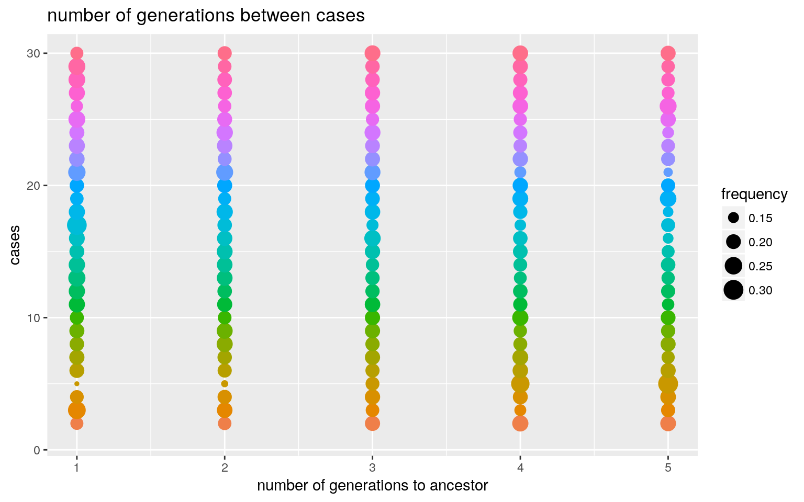
plot(res_null, type = "t_inf")
Finally, we can verify that the distributions of mu and pi match their priors, respectively an exponential distribution with rate 1000 and a beta with parameters 10 and 1. Here, we get a qualitative assessment by comparing the observed distribution (histograms) to the densities of similar sized random samples from the priors:
par(xpd=TRUE)
hist(res_null$mu, prob = TRUE, col = "grey",
border = "white",
main = "Distribution of mu")
invisible(replicate(30,
points(density(rexp(500, 1000)), type = "l", col = "blue")))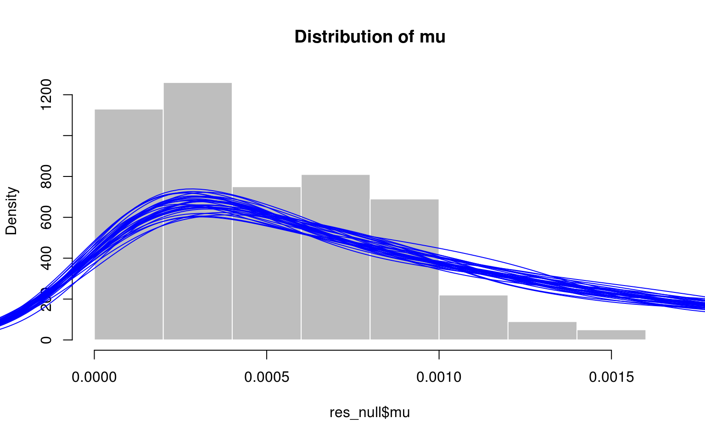
hist(res_null$pi, prob = TRUE, col = "grey",
border = "white", main = "Distribution of pi")
invisible(replicate(30,
points(density(rbeta(500, 10, 1)), type = "l", col = "blue")))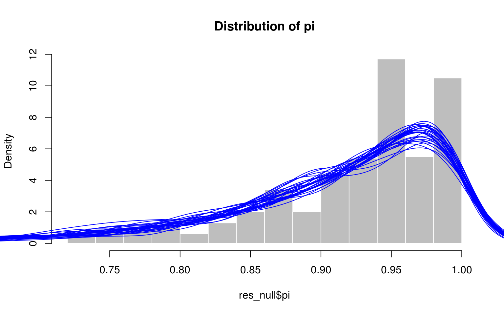
A model using symptom onset only
We can use data and likelihood customisation to change the default outbreaker2 model into a Wallinga & Teunis (1994) model. To do so, we need to:
Remove the DNA sequences from the data; alternatively we could also specify a ‘null’ function (i.e. returning a finite constant, as above) for the genetic likelihood.
Disable all likelihood components other than
timing_infectionsusingcustom_likelihoods. This means that the dates provided will be treated as dates of symptom onset, and the timing distributionwwill be taken as the serial interval.- Disable the detection of imported cases, and forcing all
kappavalues to be
While these are fairly major changes, they are straightforward to implement. We first create the dataset and custom likelihood functions:
onset_data <- outbreaker_data(dates = fake_outbreak$onset,
w_dens = fake_outbreak$w)
wt_model <- custom_likelihoods(timing_sampling = f_null,
reporting = f_null)To fix parameters or augmented data (here, fix all kappa values to 1), we set the initial states to the desired values and disable the corresponding moves:
wt_config <- create_config(init_kappa = 1, move_kappa = FALSE,
init_pi = 1, move_pi = FALSE,
move_mu = FALSE)We can now run the analyses for this new model:
set.seed(1)
res_wt <- outbreaker(data = onset_data,
config = wt_config,
likelihoods = wt_model)
#> Can't use seqTrack initialization with missing DNA sequences; using a star-like tree
plot(res_wt)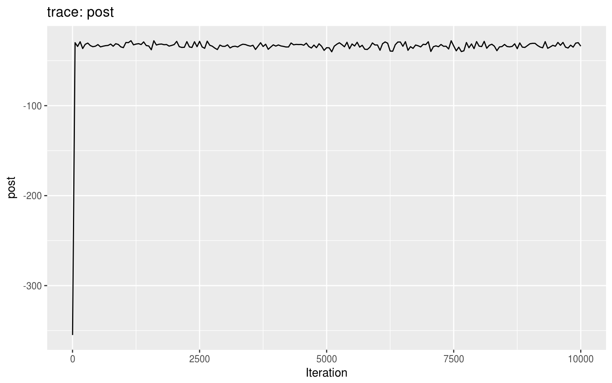
plot(res_wt, burnin = 500)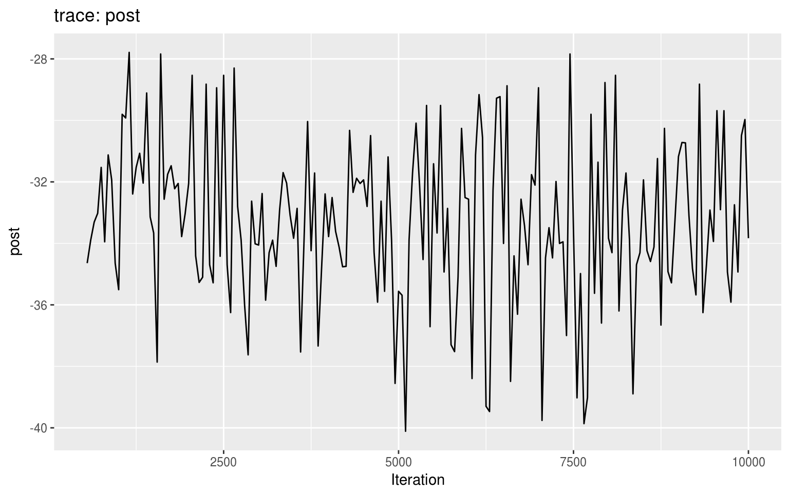
plot(res_wt, burnin = 500, type = "alpha")
#> Warning: Removed 190 rows containing missing values (geom_point).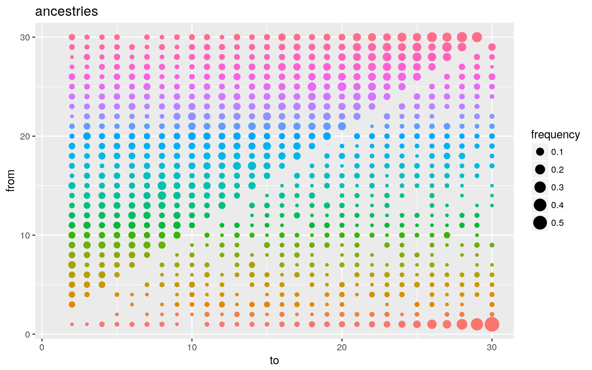
summary(res_wt)
#> $step
#> first last interval n_steps
#> 1 10000 50 201
#>
#> $post
#> Min. 1st Qu. Median Mean 3rd Qu. Max.
#> -354.90 -35.96 -32.92 -35.41 -31.63 -27.55
#>
#> $like
#> Min. 1st Qu. Median Mean 3rd Qu. Max.
#> -357.20 -38.27 -35.22 -37.71 -33.94 -29.85
#>
#> $prior
#> Min. 1st Qu. Median Mean 3rd Qu. Max.
#> 2.302 2.302 2.302 2.302 2.302 2.302
#>
#> $mu
#> Min. 1st Qu. Median Mean 3rd Qu. Max.
#> 1e-04 1e-04 1e-04 1e-04 1e-04 1e-04
#>
#> $pi
#> Min. 1st Qu. Median Mean 3rd Qu. Max.
#> 1 1 1 1 1 1
#>
#> $tree
#> from to time support generations
#> 1 NA 1 -7 NA NA
#> 2 7 2 14 0.07462687 1
#> 3 9 3 11 0.07462687 1
#> 4 18 4 11 0.06467662 1
#> 5 11 5 11 0.06467662 1
#> 6 11 6 12 0.07462687 1
#> 7 12 7 13 0.07462687 1
#> 8 15 8 13 0.12437811 1
#> 9 11 9 12 0.06965174 1
#> 10 22 10 9 0.08955224 1
#> 11 17 11 10 0.07960199 1
#> 12 18 12 10 0.08457711 1
#> 13 17 13 9 0.09452736 1
#> 14 17 14 9 0.10447761 1
#> 15 22 15 10 0.09452736 1
#> 16 23 16 7 0.08457711 1
#> 17 27 17 7 0.07462687 1
#> 18 25 18 7 0.11940299 1
#> 19 24 19 7 0.08457711 1
#> 20 25 20 6 0.12935323 1
#> 21 29 21 5 0.09950249 1
#> 22 29 22 4 0.11442786 1
#> 23 28 23 4 0.12437811 1
#> 24 30 24 3 0.13930348 1
#> 25 28 25 4 0.13432836 1
#> 26 30 26 1 0.18905473 1
#> 27 29 27 2 0.16417910 1
#> 28 1 28 0 0.24875622 1
#> 29 1 29 -1 0.37313433 1
#> 30 1 30 -2 0.59203980 1As before for the ‘null’ model, the transmission tree is very poorly resolved in this case. We use the same approach to visualise it: extract nodes and edges from the visNetork object, use this information to create an igraph object, and visualise the result using a circular layout:
## extract nodes and edges from the visNetwork object
temp <- plot(res_wt, type = "network", min_support = 0.05)
class(temp)
#> [1] "visNetwork" "htmlwidget"
head(temp$x$edges)
#> from to value arrows color
#> 22 1 23 0.05472637 to #CCDDFF
#> 23 1 24 0.06467662 to #CCDDFF
#> 24 1 25 0.09452736 to #CCDDFF
#> 25 1 26 0.16417910 to #CCDDFF
#> 26 1 27 0.12437811 to #CCDDFF
#> 27 1 28 0.24875622 to #CCDDFF
head(temp$x$nodes)
#> id label value color shape shaped
#> 1 1 1 2.1990050 #CCDDFF dot star
#> 2 2 2 0.2288557 #B2D9E3 dot <NA>
#> 3 3 3 0.2985075 #98D6C7 dot <NA>
#> 4 4 4 0.3084577 #7ED2AC dot <NA>
#> 5 5 5 0.4129353 #99CAA9 dot <NA>
#> 6 6 6 0.4328358 #C2C0AD dot <NA>
## make an igraph object
net_wt <- graph.data.frame(temp$x$edges,
vertices = temp$x$nodes[1:4])
plot(net_wt, layout = layout.circle,
main = "WT model, posterior trees")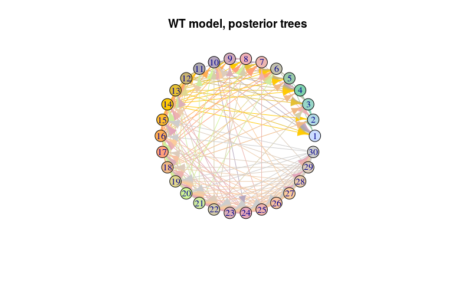
Customising movements
Customising movements works in similar ways to priors and likelihoods. In practice, this type of customisation is more complex as it most likely will require evaluation of likelihoods and priors, and therefore require the user to know which functions to all, and how. These are documented in the API vignette. In the following, we provide two examples:
a (fake) Gibbs sampler for the movement of the mutation rate
mua new ‘naive’ movement of ancestries in which infectors are picked at random from all cases
But before getting into these, we need to explicit how movements are happening in outbreaker2.
Movements in outbreaker2
At the core of the outbreaker function, movements are implemented as a list of functions, which are all evaluated in turn during every iteration of the MCMC. All movement functions must obey two rules:
The first argument must be an
outbreaker_paramobject (typically calledparamin the original code); see?create_paramfor details.All movement functions must return a valid,
outbreaker_paramobject.
However, a new difficulty compared to prior or likelihood customisation is that different movements may require different components of the model, and a different set of arguments after param. In fact, this can be seen by examining the arguments of all the default movement functions:
lapply(custom_moves(), args)
#> $mu
#> function (param, data, config, custom_ll = NULL, custom_prior = NULL)
#> NULL
#>
#> $pi
#> function (param, data, config, custom_ll = NULL, custom_prior = NULL)
#> NULL
#>
#> $eps
#> function (param, data, config, custom_ll = NULL, custom_prior = NULL)
#> NULL
#>
#> $lambda
#> function (param, data, config, custom_ll = NULL, custom_prior = NULL)
#> NULL
#>
#> $alpha
#> function (param, data, list_custom_ll = NULL)
#> NULL
#>
#> $swap_cases
#> function (param, data, list_custom_ll = NULL)
#> NULL
#>
#> $t_inf
#> function (param, data, list_custom_ll = NULL)
#> NULL
#>
#> $kappa
#> function (param, data, config, list_custom_ll = NULL)
#> NULLTo handle this difficulty, outbreaker2 transforms every movement function before running the MCMC into a new function with a single parameter param, attaching all other required argument to the function’s environment. The function achieving this transformation is called bind_moves. This function ‘knows’ what these components are for known moves listed aboves. For new, unknown moves, it attaches the following components, provided they are used as arguments of the new function:
data: the processed data; see?outbreaker_dataconfig: the configuration list; seecreate_configlikelihoods: a list of custom likelihood functions; see?custom_likelihoodspriors: a list of custom prior functions; see?custom_priors
See examples in ?bind_moves for details of how this process works.
A (fake) Gibbs sampler for mu
A Gibbs sampler supposes that the conditional distribution of a parameter is known and can directly be sampled from. Here, we use this principle to provide a toy example of custom movement for mu, assuming that this conditional distribution is always an Exponential distribution with a rate of 1000. This is easy to implement; to make sure that the function is actually used, we set a global variable changed when the function is called.
move_mu <- function(param, config) {
NEW_MOVE_HAS_BEEN_USED <<- TRUE
param$mu <- rexp(1, 1000)
return(param)
}
moves <- custom_moves(mu = move_mu)
quick_config <- list(n_iter = 500, sample_every = 1, find_import = FALSE)Note that the new movement function move_mu has two arguments, and that we do not specify config. Internally, what happens is:
## bind quick_config to function
move_mu_intern <- bind_to_function(move_mu, config = quick_config)
## new function has just one argument
move_mu_intern
#> function (param)
#> {
#> NEW_MOVE_HAS_BEEN_USED <<- TRUE
#> param$mu <- rexp(1, 1000)
#> return(param)
#> }
#> <environment: 0x337a170>
## 'config' is in the function's environment
names(environment(move_mu_intern))
#> [1] "config"
## 'config' is actually 'quick_config'
identical(environment(move_mu_intern)$config, quick_config)
#> [1] TRUEWe perform a quick run using this new movement:
NEW_MOVE_HAS_BEEN_USED <- FALSE
set.seed(1)
res_move_mu <- outbreaker(data, quick_config, moves = moves)
NEW_MOVE_HAS_BEEN_USED
#> [1] TRUE
plot(res_move_mu)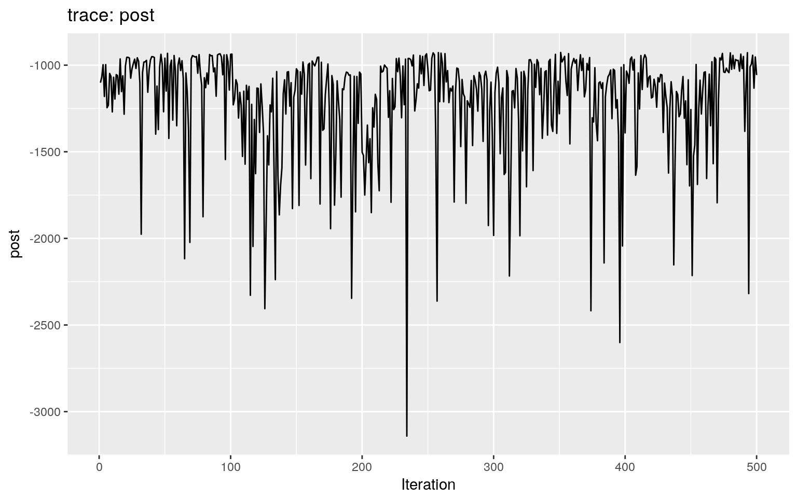
plot(res_move_mu, "pi")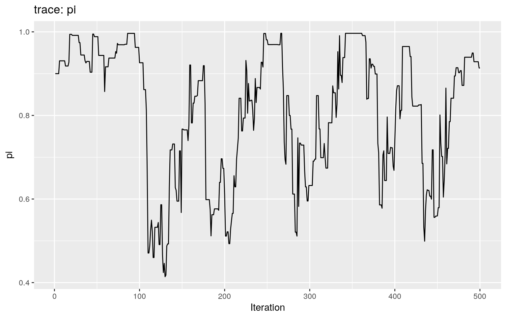
plot(res_move_mu, "mu")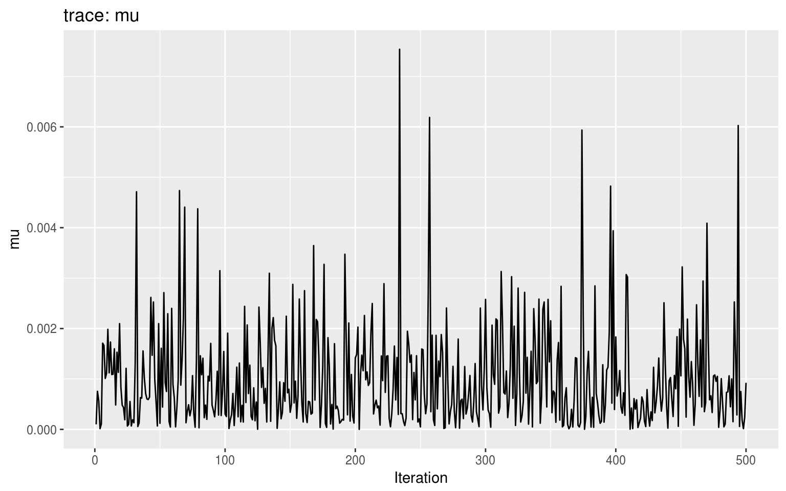
This short, full trace, clearly hasn’t mixed well (as is to be expected). But while we see the effect of accept/reject sampling (Metropolis algorithm) for pi with a lot of autocorrelation, the trace of mu shows complete independence between successive values. While the Gibbs sampler used here is not correct, this result is: a Gibbs sampler will be more efficient than the classical Metropolis(-Hasting) algorithm for a given number a iterations.
A new movement of ancestries
Moves of ancestries are done in two ways in outbreaker: by picking ancestors at random from any prior case, and by swapping cases from a transmission link. Here, we implement a new move, which will propose infectors which have been infected on the same day of the current infector. As before, we will use global variables to keep track of the resulting movements (see N_ACCEPT and N_REJECT).
api <- get_cpp_api()
new_move_ances <- function(param, data, custom_likelihoods = NULL) {
for (i in 1:data$N) {
current_ances <- param$alpha[i]
if (!is.na(current_ances)) {
## find cases infected on the same days
current_t_inf <- param$t_inf[current_ances]
pool <- which(param$t_inf == current_t_inf)
pool <- setdiff(pool, i)
if (length(pool) > 0) {
## propose new ancestor
current_ll <- api$cpp_ll_all(data, param, i = i, custom_likelihoods)
param$alpha[i] <- sample(pool, 1)
new_ll <- api$cpp_ll_all(data, param, i = i, custom_likelihoods)
## likelihood ratio - no correction, move is symmetric
ratio <- exp(new_ll - current_ll)
## accept / reject
if (runif(1) <= ratio) { # accept
N_ACCEPT <<- N_ACCEPT + 1
} else { # reject
N_REJECT <<- N_REJECT + 1
param$alpha[i] <- current_ances
}
}
}
}
return(param)
}
moves <- custom_moves(new_move = new_move_ances)We can now use this new move in our transmission tree reconstruction. We will use a shorter chain than the defaults as this new move is likely to be computer intensive.
N_ACCEPT <- 0
N_REJECT <- 0
set.seed(1)
res_new_move <- outbreaker(data, list(move_kappa = FALSE), moves = moves)
N_ACCEPT
#> [1] 149524
N_REJECT
#> [1] 265420
plot(res_new_move)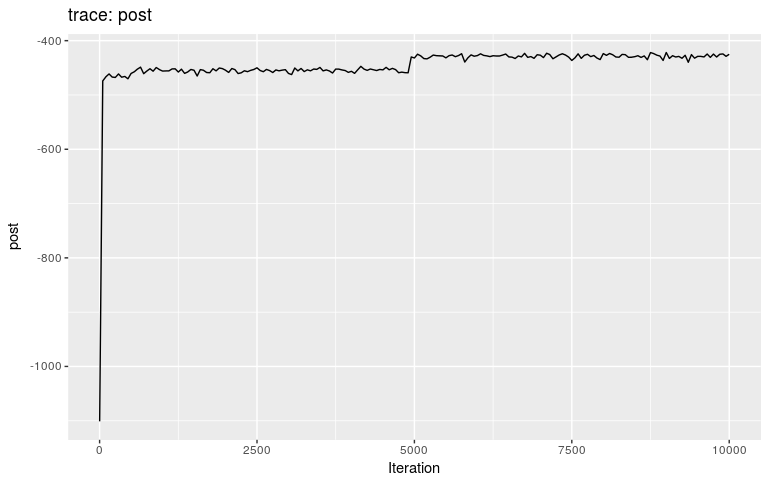
plot(res_new_move, type = "alpha")
#> Warning: Removed 603 rows containing missing values (geom_point).
summary(res_new_move)
#> $step
#> first last interval n_steps
#> 1 10000 50 201
#>
#> $post
#> Min. 1st Qu. Median Mean 3rd Qu. Max.
#> -1108.0 -472.7 -466.8 -463.4 -446.7 -438.0
#>
#> $like
#> Min. 1st Qu. Median Mean 3rd Qu. Max.
#> -1109.0 -474.8 -468.9 -465.5 -448.8 -440.1
#>
#> $prior
#> Min. 1st Qu. Median Mean 3rd Qu. Max.
#> 0.9532 1.9690 2.1370 2.0690 2.2360 2.3020
#>
#> $mu
#> Min. 1st Qu. Median Mean 3rd Qu. Max.
#> 9.796e-05 1.337e-04 1.467e-04 1.483e-04 1.648e-04 2.218e-04
#>
#> $pi
#> Min. 1st Qu. Median Mean 3rd Qu. Max.
#> 0.8608 0.9637 0.9818 0.9748 0.9927 1.0000
#>
#> $tree
#> from to time support generations
#> 1 NA 1 -1 NA NA
#> 2 1 2 1 1.0000000 1
#> 3 2 3 3 1.0000000 1
#> 4 NA 4 3 NA NA
#> 5 3 5 4 0.9701493 1
#> 6 9 6 6 0.5223881 1
#> 7 4 7 5 1.0000000 1
#> 8 5 8 6 0.9402985 1
#> 9 4 9 5 0.5323383 1
#> 10 6 10 7 0.9950249 1
#> 11 7 11 7 0.6417910 1
#> 12 5 12 7 0.8407960 1
#> 13 9 13 7 1.0000000 1
#> 14 5 14 7 0.6815920 1
#> 15 5 15 7 0.7213930 1
#> 16 7 16 8 0.8358209 1
#> 17 26 17 9 0.9850746 1
#> 18 8 18 9 0.4776119 1
#> 19 9 19 8 1.0000000 1
#> 20 10 20 10 0.9701493 1
#> 21 11 21 10 0.9552239 1
#> 22 11 22 10 1.0000000 1
#> 23 13 23 9 1.0000000 1
#> 24 13 24 9 1.0000000 1
#> 25 13 25 9 1.0000000 1
#> 26 7 26 7 0.6467662 1
#> 27 17 27 11 1.0000000 1
#> 28 NA 28 9 NA NA
#> 29 10 29 11 1.0000000 1
#> 30 13 30 10 1.0000000 1Results show a switch to a new mode at about 5000 iterations. Let us compare the consensus tree to the actual one (store in fake_outbreak$ances):
summary(res_new_move, burnin = 5000)
#> $step
#> first last interval n_steps
#> 5050 10000 50 100
#>
#> $post
#> Min. 1st Qu. Median Mean 3rd Qu. Max.
#> -478.3 -449.3 -446.6 -448.0 -443.6 -438.0
#>
#> $like
#> Min. 1st Qu. Median Mean 3rd Qu. Max.
#> -480.4 -451.5 -448.7 -450.1 -445.8 -440.1
#>
#> $prior
#> Min. 1st Qu. Median Mean 3rd Qu. Max.
#> 0.9532 1.9650 2.1700 2.0780 2.2360 2.3000
#>
#> $mu
#> Min. 1st Qu. Median Mean 3rd Qu. Max.
#> 9.863e-05 1.271e-04 1.422e-04 1.438e-04 1.569e-04 2.218e-04
#>
#> $pi
#> Min. 1st Qu. Median Mean 3rd Qu. Max.
#> 0.8608 0.9632 0.9854 0.9757 0.9927 0.9997
#>
#> $tree
#> from to time support generations
#> 1 NA 1 -1 NA NA
#> 2 1 2 1 1.00 1
#> 3 2 3 3 1.00 1
#> 4 NA 4 3 NA NA
#> 5 3 5 4 0.98 1
#> 6 4 6 5 0.91 1
#> 7 4 7 5 1.00 1
#> 8 5 8 6 0.94 1
#> 9 6 9 6 0.94 1
#> 10 6 10 7 1.00 1
#> 11 7 11 7 0.65 1
#> 12 5 12 7 0.86 1
#> 13 9 13 7 1.00 1
#> 14 5 14 7 0.69 1
#> 15 5 15 7 0.70 1
#> 16 7 16 8 0.86 1
#> 17 26 17 9 1.00 1
#> 18 8 18 9 0.51 1
#> 19 9 19 8 1.00 1
#> 20 10 20 10 0.94 1
#> 21 11 21 10 0.97 1
#> 22 11 22 10 1.00 1
#> 23 13 23 9 1.00 1
#> 24 13 24 9 1.00 1
#> 25 13 25 9 1.00 1
#> 26 7 26 7 0.63 1
#> 27 17 27 11 1.00 1
#> 28 NA 28 9 NA NA
#> 29 10 29 10 1.00 1
#> 30 13 30 11 1.00 1
tree2 <- summary(res_new_move, burnin = 5000)$tree
comparison <- data.frame(case = 1:30,
inferred = paste(tree2$from),
true = paste(fake_outbreak$ances),
stringsAsFactors = FALSE)
comparison$correct <- comparison$inferred == comparison$true
comparison
#> case inferred true correct
#> 1 1 NA NA TRUE
#> 2 2 1 1 TRUE
#> 3 3 2 2 TRUE
#> 4 4 NA NA TRUE
#> 5 5 3 3 TRUE
#> 6 6 4 4 TRUE
#> 7 7 4 4 TRUE
#> 8 8 5 5 TRUE
#> 9 9 6 6 TRUE
#> 10 10 6 6 TRUE
#> 11 11 7 7 TRUE
#> 12 12 5 8 FALSE
#> 13 13 9 9 TRUE
#> 14 14 5 5 TRUE
#> 15 15 5 5 TRUE
#> 16 16 7 7 TRUE
#> 17 17 26 7 FALSE
#> 18 18 8 8 TRUE
#> 19 19 9 9 TRUE
#> 20 20 10 10 TRUE
#> 21 21 11 11 TRUE
#> 22 22 11 11 TRUE
#> 23 23 13 13 TRUE
#> 24 24 13 13 TRUE
#> 25 25 13 13 TRUE
#> 26 26 7 17 FALSE
#> 27 27 17 17 TRUE
#> 28 28 NA NA TRUE
#> 29 29 10 10 TRUE
#> 30 30 13 13 TRUE
mean(comparison$correct)
#> [1] 0.9